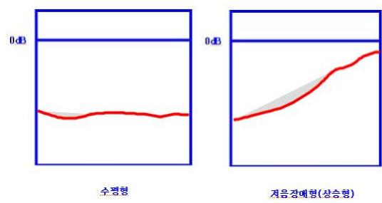
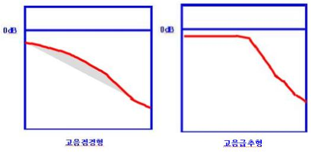
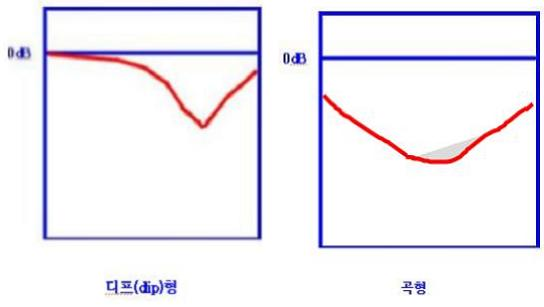
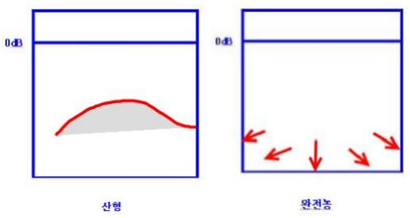

청력 손실(청력역치)을 근거로 청력도(聽力圖)를 작성하여, 각 주파수의 청력손실 특성에 따라 다양한 청력형으로 분류합니다.

- ① 수평형
청력손실치가 각 주파수에 걸쳐 거의 유사한 형태입니다.
이경화증, 일부 유전성 난청, 풍진, 특정의 감음성, 전음성 난청과 관련이 있습니다.
- ② 저음장애형(상승형)
저주파수대의 청력 손실이 크고, 반면에 고주파수대의 청력 손실은 적은 형태입니다.
다수의 전음성 난청, 감음신경성 난청의 메니엘병 등과 관련이 있습니다.

- ③ 고음점경형
저주파수대에서 고주파수대로 올라감에 따라서 점진적으로 청력손실이 커져 가는 형태입니다.
원인불명의 감음성 난청, 가족성 내이난청, 노인성 난청과 관련이 있습니다.
- ④ 고음급추형
저주파수대에의 청력손실은 적지만(수평형으로 나타나지만), 어느 주파수 이상(2,000Hz이상)에서는 급격히 청력이 떨어지는 형태입니다. 한 옥타브의 음역 내에서 40dB이상의 심한 청력의 하강이 나타납니다.
약물중독, 원인불명의 감음성 난청, 스트렙토마이신에 의한 난청 초기, 노인성 난청의 초기와 관련이 있습니다.

- ⑤ 디프(dip)형
극히 국한된 주파수대, 특히 고음부의 4,000Hz, 때로 2,000Hz의 청력손실이 크고, 다른 주파수대는 거의 수평 형태입니다. 직업성(소음성) 난청의 초기에 많이 볼 수 있습니다.
- ⑥ 곡형
중음역의 손실이 크고, 저음역이나 고음역의 청력손실이 적은 형태입니다

- ⑦ 산형
저음역이나 고음역의 청력손실이 크고 중음의 청력손실이 적은 형태입니다.
메니엘병의 반복된 발작, 혼합성 난청과 관련성이 있습니다.
- ⑧ 완전농
가청범위의 소리를 전혀 들을 수 없거나, 저음역의 일부 주파수만 청력이 측정되나 다른 주파수대에는 거의 청력 이 없는 형태입니다.
!--